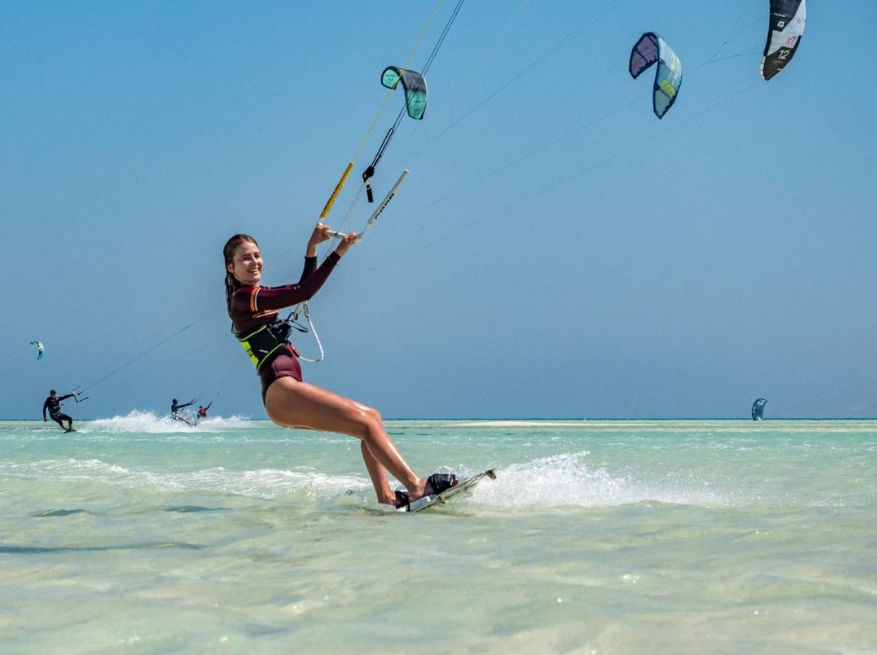
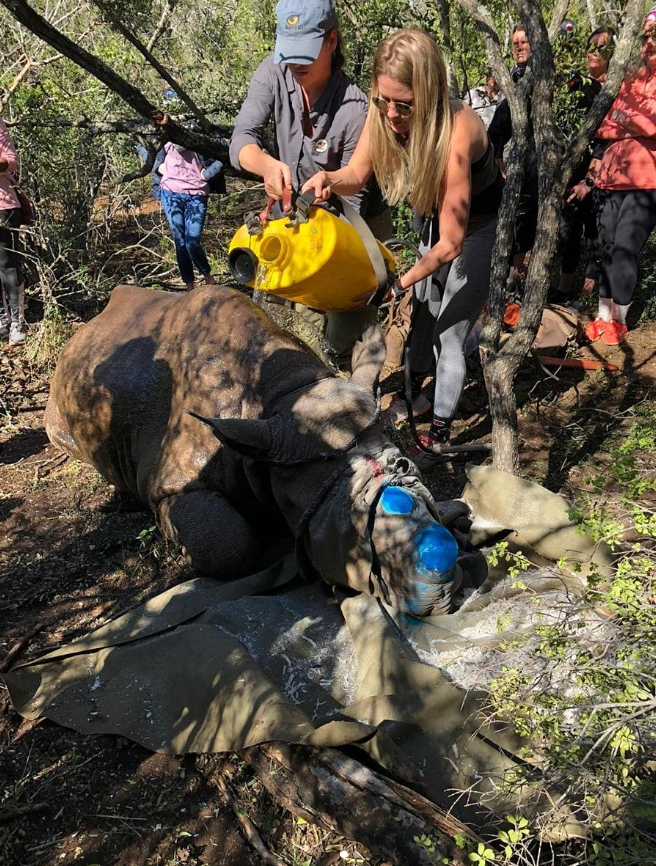
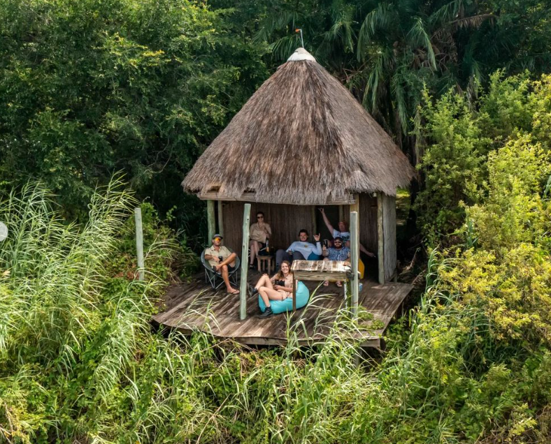
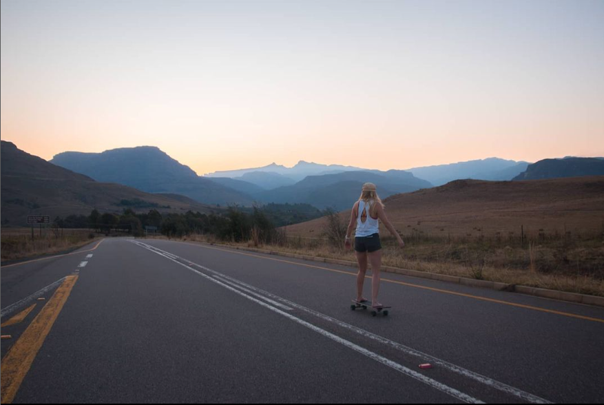
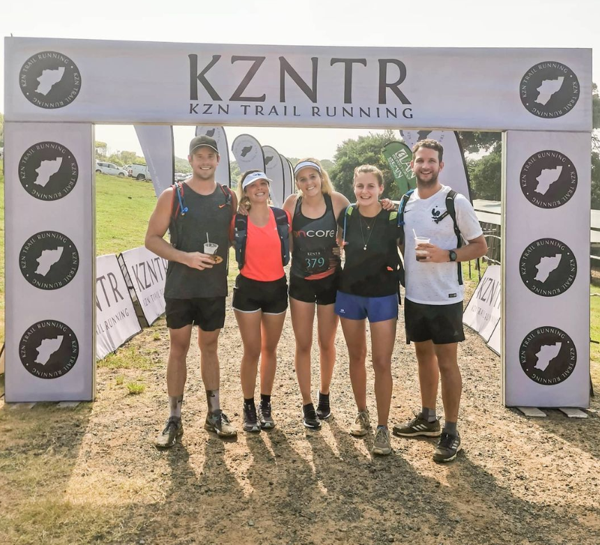

Until recently, the mysteries of the ocean remained unfamiliar territory to me. In fact, I held a deep fear of the ocean ever since an incident where I found myself trapped in the impact zone during a training session for the Tinman triathlon in Durban. Determined to overcome this fear, I decided to embark on an introductory course in freedive breathing. Little did I know that this course would transform my life and completely shift my perception of the ocean. With newfound confidence, I eagerly delved into various ocean activities, including free diving, surfing, skiing, and my personal favorite, kitesurfing. These excursions allowed me to forge a closer connection with the ocean, unveiling its breathtaking wonders and a newfound love for its boundless possibilities.

My dad is a dedicated soldier in the fight to protect endangered species in Africa. Growing up, I had the privilege of listening to captivating stories, gaining a deep understanding, and meeting extraordinary individuals who devote their entire lives to serving and safeguarding our precious wildlife. This upbringing instilled in me a profound passion for this cause that runs through the very core of my being. I am driven to find ways in which I can contribute value to this cause and support the courageous individuals who put their lives at stake to preserve our natural environment.


I strongly believe that travel is the wellspring of inspiration, and cultural exchange is the key to understanding. Some of the most exhilarating moments in my life have been when I pushed beyond my comfort zone and ventured into the uncharted. Whether it was immersing myself in a new country, embracing unfamiliar activities, acquiring fresh skills, or simply connecting with new people, these experiences have shaped me profoundly. The thirst for adventure never wanes; instead, it intensifies with each exploration. I have been fortunate to find myself in breathtakingly beautiful locations, surrounded by kindred spirits who share the same zest for life. For me, life is about forging connections with remarkable individuals and embarking on extraordinary pursuits.